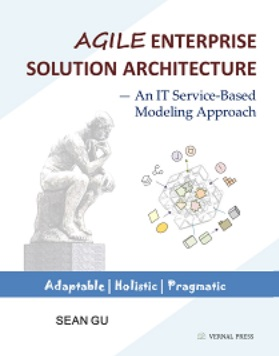

|
Agile Enterprise Solution Architecture - An IT Service-Based Modeling Approach By Sean Gu |
|
|
 |
Purchase Links: |
ABOUT THE AUTHOR
As part of the IT Architect Certification Board and a chief IT Architect instructor at IBM GCG, he has facilitated thousands of architects and technical leaders in China, the Asia-Pacific, the USA and Europe, and has mentored top-level executive architects for their career advancement.
Sean, graduated from the University of Chicago, holds Master's degrees
in Physical Science, Systems Analysis, and Business Administration. He
has a wide array of interests including swimming, hiking, calligraphy,
and Chinese zither. Contact: vernalpress@outlook.com
|
|